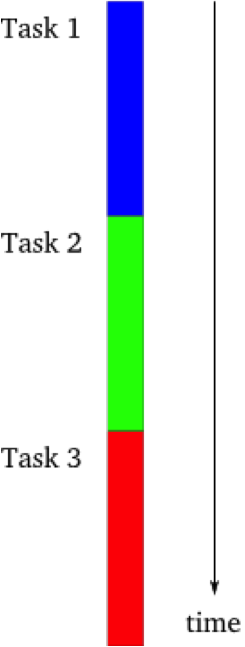
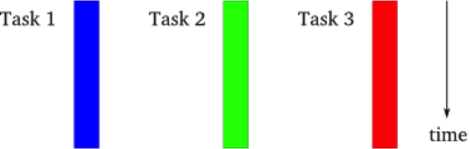
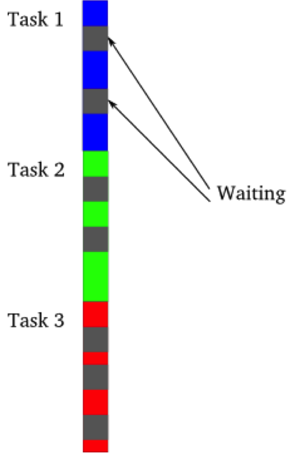
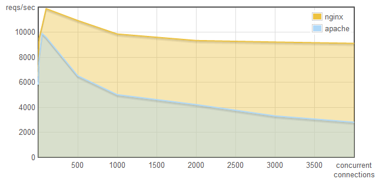

183.223 Web Application Engineering
& Content Management
Contact: waecm@inso.tuwien.ac.at
About me
- Christoph Mayerhofer
- Author of ReviewClipse (code review tool, now Mylyn Reviews)
- Converted from ...
- Rich-clients to web applications
- Static to dynamic languages
- Static GUIs to CSS/HTML5 GUIs
- Frameworks to Libraries
- Java Coder to JavaScript Ninja
- ...
Single-threaded webservers
Multi-threaded webservers
Event-driven webservers
Performance
 http://blog.webfaction.com/2008/12/a-little-holiday-present-10000-reqssec-with-nginx-2/
http://blog.webfaction.com/2008/12/a-little-holiday-present-10000-reqssec-with-nginx-2/
Greenlet flow
def generator():
yield 1
yield 2
yield 3
>>> [x for x in generator()]
[1, 2, 3]

Gevent Greenlets Example
import gevent.monkey
# make all libraries cooperative
gevent.monkey.patch_socket()
def get_url(url):
response = urllib2.urlopen(url)
result = response.read()
return json.loads(result)
thread1 = Greenlet.spawn(get_url, 'http://json-time.appspot.com/time.json')
thread2 = Greenlet.spawn(get_url, 'http://www.inso.tuwien.ac.at')
result = gevent.joinall([thread1, thread2])
EventEmitter Example
HTTP Request:
var req = http.get('http://www.inso.tuwien.ac.at');
req.on('response', (res) => {
console.log(`Got response: ${res.statusCode}`);
// consume response body
res.resume();
});
req.on('error', (e) => {
console.log(`Got error: ${e.message}`);
});
Shortcut:
http.get('http://www.inso.tuwien.ac.at', (res) => {
console.log(`Got response: ${res.statusCode}`);
// consume response body
res.resume();
}).on('error', (e) => {
console.log(`Got error: ${e.message}`);
});
Custom EventEmitter
const EventEmitter = require('events');
class MyEmitter extends EventEmitter {}
const myEmitter = new MyEmitter();
myEmitter.on('event', () => {
console.log('an event occurred!');
});
myEmitter.emit('event');
Browser Events
- Browser's JavaScript API has no blocking functions
- Reason: Single-threaded (except WebWorkers)
- Browsers also implement some sort of EventEmitters
- You register callbacks for events
- The callback is fired on I/O (user interaction)
$("a").click(() => {
console.log("clicked");
});
$.ajax(..., (result) => {
console.log(result);
});
Callbacks are bad
- Leads to Continuation-passing style (CPS)
- Code is hard to read and maintain
- No common error handling in various libraries
let fs = require('fs');
function main() {
fs.readFile('/etc/foobar', 'utf8', (err, content) => {
if (err) return console.log(err);
content = content + '\nAppended something!';
fs.writeFile('~/foobaz', content, (err) => {
if(err) return console.log(err);
console.log('Appended text!');
});
});
}
Promises (Deferreds)
- Very important concept in JavaScript (front- and back-end)
- "A promise represents the eventual result of an asynchronous operation."
- Various different implementations exist (jQuery, Q, Angular, ...)
- Standardized with ES6 (Promises/A+ https://promisesaplus.com)
- Node.js supports ES6 Promises since Version 4
- Allows method chaining with
Promise.then(onFulfilled, onRejected) - 3 States: pending, fulfilled, rejected
Node.js Example
let fs = require('fs');
function readFile() {
return new Promise((resolve, reject) => {
fs.readFile('/etc/foobar', 'utf8', (err, content) => {
if (err) reject(err);
content = content + '\nAppended something!';
resolve(content);
});
}
function writeFile(content) { ... }
function main() {
readFile()
.then((content) => {
return writeFile(content);
}).catch((err) => {
console.log(err);
});
}
But ... (jQuery)
UserDao.getUser = function() {
var deferred = new $.Deferred();
this.rpc.invoke('get_user')
.done(function(user) {
self.unpack(user)
.done(function(user) {
app.model.upgrade('user', new User(user))
.done(function(upgradedUser) {
app.dao.user.updateUser(upgradedUser)
.done(function(updatedUser) {
deferred.resolve(new User(updatedUser));
})
.fail(function(error) {
deferred.reject(error);
});
}
})
.fail(function(error) {
deferred.reject(error);
});
})
.fail(function(error) {
deferred.reject(error);
});
})
.fail(function (error) {
log.error('Get user failed: %s', JSON.stringify(error));
deferred.reject(error);
});
return deferred.promise();
};
Should be rewritten to:
UserDao.getUser = function() {
return this.rpc.invoke('get_user')
.done(function(user) {
return self.unpack(user);
})
.done(function(user) {
return app.model.upgrade('user', new User(user));
})
.done(function(upgradedUser) {
return app.dao.user.updateUser(upgradedUser);
})
.done(function(updatedUser) {
return new User(updatedUser);
});
.fail(function(error) {
return error;
});
};
Generator functions (ES6)
- Ecmascript 6 allows to define generator functions
- Generator functions (*) are factories which returns an iterator
yieldsuspends untilnext()is called- Works since Node.js Version 5 https://kangax.github.io/compat-table/es6/
let fs = require('fs');
function readFile() {
fs.readFile('/etc/foobar', 'utf8', (err, content) => {
if (err) throw err;
content = content + '\nAppended something!';
it.next(content);
}
function writeFile(content) { ... }
function *main() {
try {
let content = yield readFile();
yield writeFile(content);
} catch(err) {
console.log(err);
}
}
let it = main();
it.next();
Async/Await (ES7)
- Proposal currently in Stage 3 "Candidate"
- Syntactic sugar for generator functions with async calls
asyncfunctions wait for the execution of Promises- Requires an ES7 transpiler (src-2-src-compiler, for example babel, traceur)
- We can now use
try/catch, for, while, ...
let fs = require('fs');
async function readFile() {
return new Promise((resolve, reject) => {
fs.readFile('/etc/foobar', 'utf8', (err, content) => {
if (err) reject(err);
content = content + '\nAppended something!';
resolve(content);
});
}
async function writeFile(content) { ... }
async function main() {
try {
let content = await readFile();
await writeFile(content);
} catch(err) {
console.log(err);
}
}
How to implement a node.js RESTful Webserver in 5 Minutes
var express = require('express');
var bodyParser = require('body-parser');
var app = express();
var router = express.Router();
app.use(bodyParser.json());
app.use(express.static('htdocs'));
app.use('/api', router);
router.use(function(req, res, next) {
console.log(req.method + " " + req.url);
next(); // go to next route
});
app.listen(8080, function () {
console.log('Now listening on port 8080!');
});
How to implement a node.js RESTful Webserver in 5 Minutes
router.route('/users')
// create a user: POST http://localhost:8080/api/users
.post(function(req, res) {
var user = saveUser({name: req.body.name});
res.json(user);
})
// get all users: GET http://localhost:8080/api/users
.get(function(req, res) {
var users = getUsers();
res.json(users);
});
router.route('/users/:userId')
// get a user: GET http://localhost:8080/api/user/1
.get(function(req, res) {
var user = getUser(req.params.userId);
return res.json(user);
});
REST (represential state transfer)
- REST is a architectural style/pattern, and was used to design HTTP
- Steve Vinoski: Serendipitous Reuse
http://computer.org/portal/pages/dsonline/2008/02/w1tow.xml - HTTP is often used in a non-RESTful way (because of :80)
- SOAP is protocol agnostic - HTTP features can't be used
- SOAP uses POSTs (no caching)
- Endpoints, no URIs (links)
- 5 major concepts of REST: Resources, Representations, Operations, Hypermedia, Statelessness